Fits generalized boosted regression models. For technical details, see the
vignette: utils::browseVignettes("gbm").
gbm(formula = formula(data), distribution = "bernoulli", data = list(), weights, var.monotone = NULL, n.trees = 100, interaction.depth = 1, n.minobsinnode = 10, shrinkage = 0.1, bag.fraction = 0.5, train.fraction = 1, cv.folds = 0, keep.data = TRUE, verbose = FALSE, class.stratify.cv = NULL, n.cores = NULL)
| formula | A symbolic description of the model to be fit. The formula
may include an offset term (e.g. y~offset(n)+x). If
|
|---|---|
| distribution | Either a character string specifying the name of the
distribution to use or a list with a component Currently available options are If quantile regression is specified, If If "pairwise" regression is specified,
Note that splitting of instances into training and validation sets follows
group boundaries and therefore only approximates the specified
Weights can be used in conjunction with pairwise metrics, however it is assumed that they are constant for instances from the same group. For details and background on the algorithm, see e.g. Burges (2010). |
| data | an optional data frame containing the variables in the model. By
default the variables are taken from |
| weights | an optional vector of weights to be used in the fitting
process. Must be positive but do not need to be normalized. If
|
| var.monotone | an optional vector, the same length as the number of predictors, indicating which variables have a monotone increasing (+1), decreasing (-1), or arbitrary (0) relationship with the outcome. |
| n.trees | Integer specifying the total number of trees to fit. This is equivalent to the number of iterations and the number of basis functions in the additive expansion. Default is 100. |
| interaction.depth | Integer specifying the maximum depth of each tree (i.e., the highest level of variable interactions allowed). A value of 1 implies an additive model, a value of 2 implies a model with up to 2-way interactions, etc. Default is 1. |
| n.minobsinnode | Integer specifying the minimum number of observations in the terminal nodes of the trees. Note that this is the actual number of observations, not the total weight. |
| shrinkage | a shrinkage parameter applied to each tree in the expansion. Also known as the learning rate or step-size reduction; 0.001 to 0.1 usually work, but a smaller learning rate typically requires more trees. Default is 0.1. |
| bag.fraction | the fraction of the training set observations randomly
selected to propose the next tree in the expansion. This introduces
randomnesses into the model fit. If |
| train.fraction | The first |
| cv.folds | Number of cross-validation folds to perform. If
|
| keep.data | a logical variable indicating whether to keep the data and
an index of the data stored with the object. Keeping the data and index
makes subsequent calls to |
| verbose | Logical indicating whether or not to print out progress and
performance indicators ( |
| class.stratify.cv | Logical indicating whether or not the
cross-validation should be stratified by class. Defaults to |
| n.cores | The number of CPU cores to use. The cross-validation loop
will attempt to send different CV folds off to different cores. If
|
A gbm.object object.
gbm.fit provides the link between R and the C++ gbm engine.
gbm is a front-end to gbm.fit that uses the familiar R
modeling formulas. However, model.frame is very slow if
there are many predictor variables. For power-users with many variables use
gbm.fit. For general practice gbm is preferable.
This package implements the generalized boosted modeling framework. Boosting is the process of iteratively adding basis functions in a greedy fashion so that each additional basis function further reduces the selected loss function. This implementation closely follows Friedman's Gradient Boosting Machine (Friedman, 2001).
In addition to many of the features documented in the Gradient Boosting
Machine, gbm offers additional features including the out-of-bag
estimator for the optimal number of iterations, the ability to store and
manipulate the resulting gbm object, and a variety of other loss
functions that had not previously had associated boosting algorithms,
including the Cox partial likelihood for censored data, the poisson
likelihood for count outcomes, and a gradient boosting implementation to
minimize the AdaBoost exponential loss function.
Y. Freund and R.E. Schapire (1997) “A decision-theoretic generalization of on-line learning and an application to boosting,” Journal of Computer and System Sciences, 55(1):119-139.
G. Ridgeway (1999). “The state of boosting,” Computing Science and Statistics 31:172-181.
J.H. Friedman, T. Hastie, R. Tibshirani (2000). “Additive Logistic Regression: a Statistical View of Boosting,” Annals of Statistics 28(2):337-374.
J.H. Friedman (2001). “Greedy Function Approximation: A Gradient Boosting Machine,” Annals of Statistics 29(5):1189-1232.
J.H. Friedman (2002). “Stochastic Gradient Boosting,” Computational Statistics and Data Analysis 38(4):367-378.
B. Kriegler (2007). Cost-Sensitive Stochastic Gradient Boosting Within a Quantitative Regression Framework. Ph.D. Dissertation. University of California at Los Angeles, Los Angeles, CA, USA. Advisor(s) Richard A. Berk. urlhttps://dl.acm.org/citation.cfm?id=1354603.
C. Burges (2010). “From RankNet to LambdaRank to LambdaMART: An Overview,” Microsoft Research Technical Report MSR-TR-2010-82.
# # A least squares regression example # # Simulate data set.seed(101) # for reproducibility N <- 1000 X1 <- runif(N) X2 <- 2 * runif(N) X3 <- ordered(sample(letters[1:4], N, replace = TRUE), levels = letters[4:1]) X4 <- factor(sample(letters[1:6], N, replace = TRUE)) X5 <- factor(sample(letters[1:3], N, replace = TRUE)) X6 <- 3 * runif(N) mu <- c(-1, 0, 1, 2)[as.numeric(X3)] SNR <- 10 # signal-to-noise ratio Y <- X1 ^ 1.5 + 2 * (X2 ^ 0.5) + mu sigma <- sqrt(var(Y) / SNR) Y <- Y + rnorm(N, 0, sigma) X1[sample(1:N, size = 500)] <- NA # introduce some missing values X4[sample(1:N, size = 300)] <- NA # introduce some missing values data <- data.frame(Y, X1, X2, X3, X4, X5, X6) # Fit a GBM set.seed(102) # for reproducibility gbm1 <- gbm(Y ~ ., data = data, var.monotone = c(0, 0, 0, 0, 0, 0), distribution = "gaussian", n.trees = 100, shrinkage = 0.1, interaction.depth = 3, bag.fraction = 0.5, train.fraction = 0.5, n.minobsinnode = 10, cv.folds = 5, keep.data = TRUE, verbose = FALSE, n.cores = 1) # Check performance using the out-of-bag (OOB) error; the OOB error typically # underestimates the optimal number of iterations best.iter <- gbm.perf(gbm1, method = "OOB")#>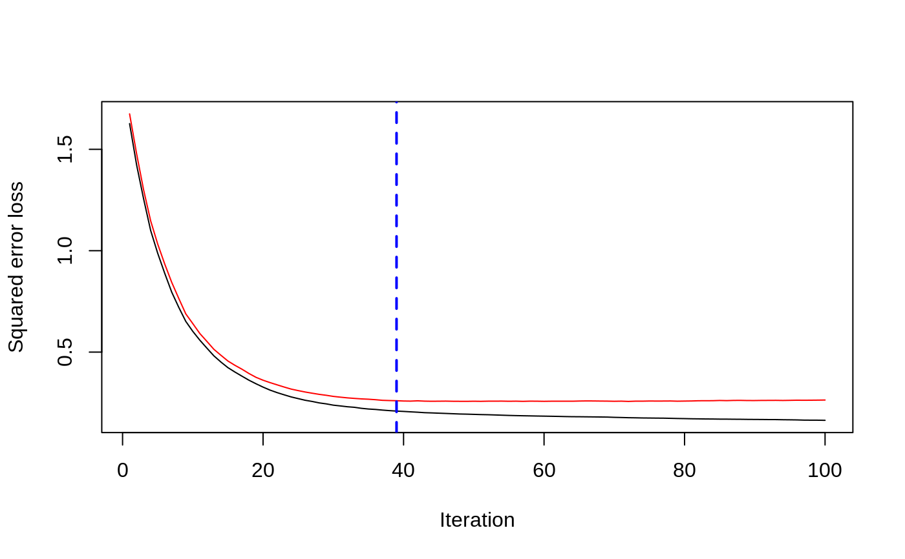print(best.iter)#> [1] 39 #> attr(,"smoother") #> Call: #> loess(formula = object$oobag.improve ~ x, enp.target = min(max(4, #> length(x)/10), 50)) #> #> Number of Observations: 100 #> Equivalent Number of Parameters: 8.32 #> Residual Standard Error: 0.00482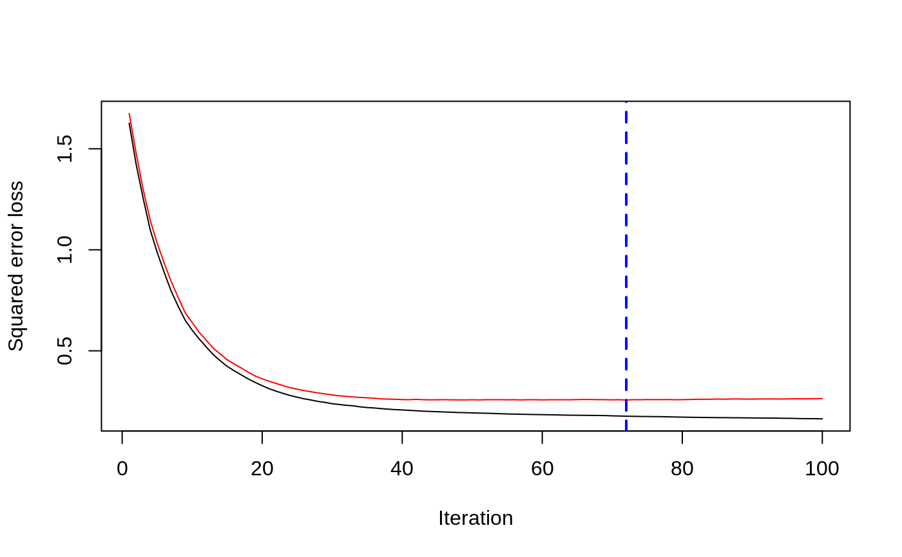print(best.iter)#> [1] 72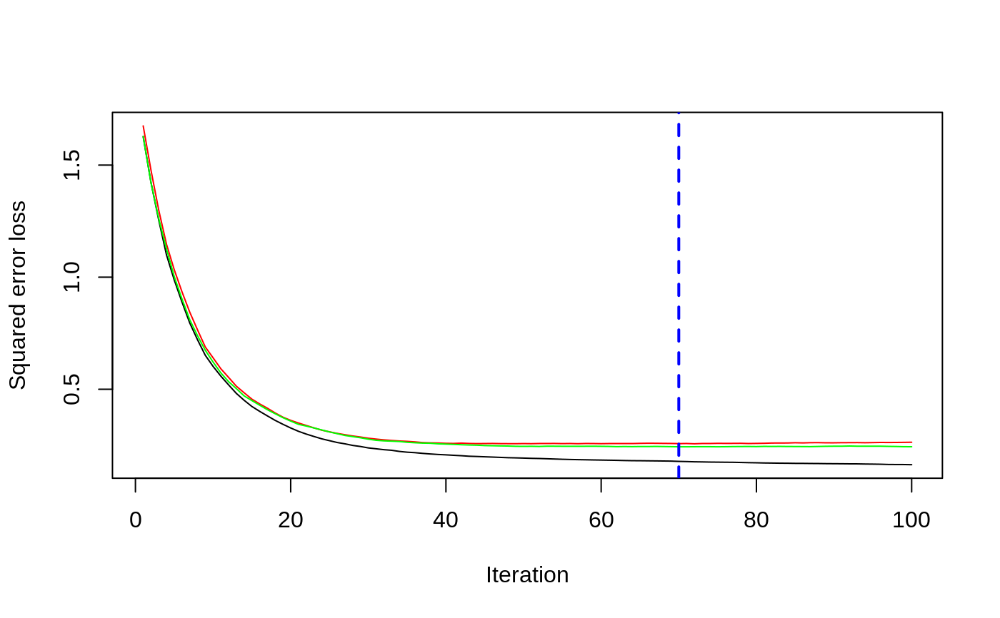print(best.iter)#> [1] 70# Plot relative influence of each variable par(mfrow = c(1, 2)) summary(gbm1, n.trees = 1) # using first tree#> var rel.inf #> X3 X3 77.63653 #> X2 X2 22.36347 #> X1 X1 0.00000 #> X4 X4 0.00000 #> X5 X5 0.00000 #> X6 X6 0.00000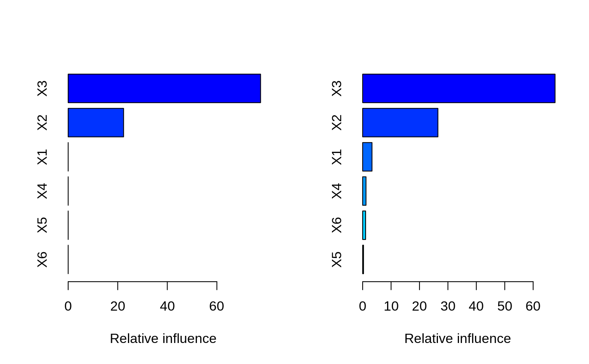#> var rel.inf #> X3 X3 67.7119268 #> X2 X2 26.4776500 #> X1 X1 3.2894907 #> X4 X4 1.1762229 #> X6 X6 1.0391610 #> X5 X5 0.3055486#> SplitVar SplitCodePred LeftNode RightNode MissingNode ErrorReduction Weight #> 0 2 1.50000000 1 5 9 250.57638 250 #> 1 1 0.78120367 2 3 4 37.35455 126 #> 2 -1 -0.18949436 -1 -1 -1 0.00000 41 #> 3 -1 -0.07328112 -1 -1 -1 0.00000 85 #> 4 -1 -0.11109654 -1 -1 -1 0.00000 126 #> 5 1 1.04599545 6 7 8 34.82483 124 #> 6 -1 0.03528368 -1 -1 -1 0.00000 61 #> 7 -1 0.14128717 -1 -1 -1 0.00000 63 #> 8 -1 0.08914029 -1 -1 -1 0.00000 124 #> 9 -1 -0.01177907 -1 -1 -1 0.00000 250 #> Prediction #> 0 -0.01177907 #> 1 -0.11109654 #> 2 -0.18949436 #> 3 -0.07328112 #> 4 -0.11109654 #> 5 0.08914029 #> 6 0.03528368 #> 7 0.14128717 #> 8 0.08914029 #> 9 -0.01177907#> SplitVar SplitCodePred LeftNode RightNode MissingNode ErrorReduction Weight #> 0 0 0.6583952396 1 2 3 0.5862803 250 #> 1 -1 -0.0005414893 -1 -1 -1 0.0000000 85 #> 2 -1 0.0127684504 -1 -1 -1 0.0000000 44 #> 3 3 48.0000000000 4 5 9 0.6988419 121 #> 4 -1 -0.0120865976 -1 -1 -1 0.0000000 32 #> 5 5 1.2224274612 6 7 8 0.7638308 53 #> 6 -1 0.0285211180 -1 -1 -1 0.0000000 11 #> 7 -1 -0.0010805051 -1 -1 -1 0.0000000 42 #> 8 -1 0.0050632280 -1 -1 -1 0.0000000 53 #> 9 -1 0.0052615051 -1 -1 -1 0.0000000 36 #> Prediction #> 0 0.0023471175 #> 1 -0.0005414893 #> 2 0.0127684504 #> 3 0.0005867285 #> 4 -0.0120865976 #> 5 0.0050632280 #> 6 0.0285211180 #> 7 -0.0010805051 #> 8 0.0050632280 #> 9 0.0052615051# Simulate new data set.seed(103) # for reproducibility N <- 1000 X1 <- runif(N) X2 <- 2 * runif(N) X3 <- ordered(sample(letters[1:4], N, replace = TRUE)) X4 <- factor(sample(letters[1:6], N, replace = TRUE)) X5 <- factor(sample(letters[1:3], N, replace = TRUE)) X6 <- 3 * runif(N) mu <- c(-1, 0, 1, 2)[as.numeric(X3)] Y <- X1 ^ 1.5 + 2 * (X2 ^ 0.5) + mu + rnorm(N, 0, sigma) data2 <- data.frame(Y, X1, X2, X3, X4, X5, X6) # Predict on the new data using the "best" number of trees; by default, # predictions will be on the link scale Yhat <- predict(gbm1, newdata = data2, n.trees = best.iter, type = "link") # least squares error print(sum((data2$Y - Yhat)^2))#> [1] 5201.051# Construct univariate partial dependence plots p1 <- plot(gbm1, i.var = 1, n.trees = best.iter) p2 <- plot(gbm1, i.var = 2, n.trees = best.iter) p3 <- plot(gbm1, i.var = "X3", n.trees = best.iter) # can use index or name grid.arrange(p1, p2, p3, ncol = 3)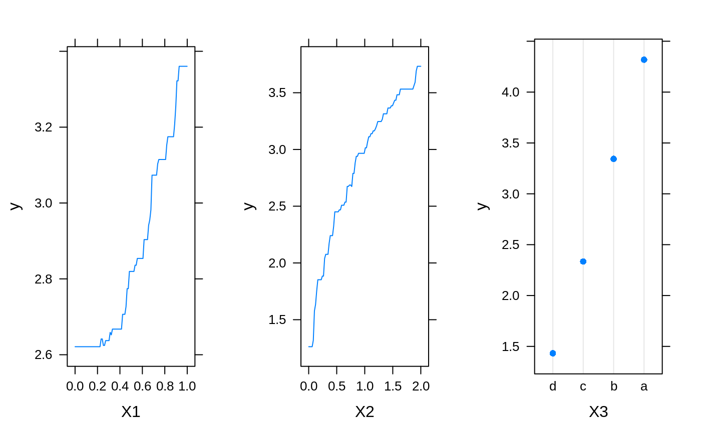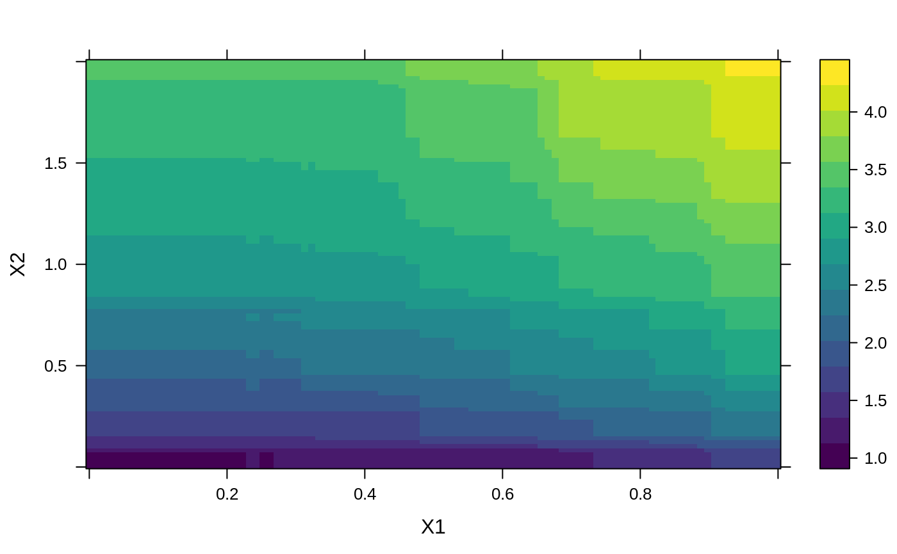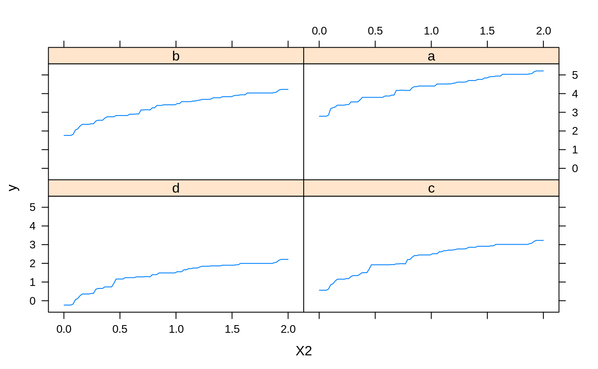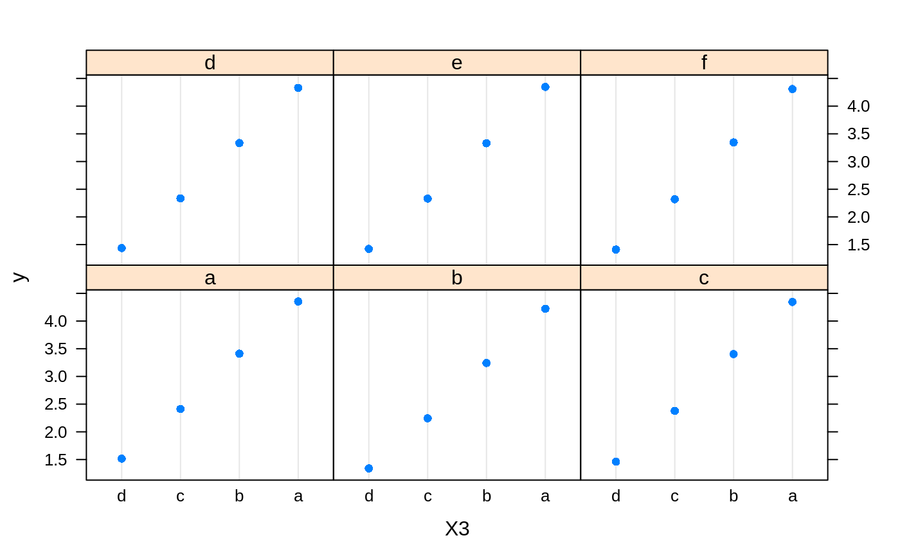# Construct trivariate partial dependence plots plot(gbm1, i.var = c(1, 2, 6), n.trees = best.iter, continuous.resolution = 20)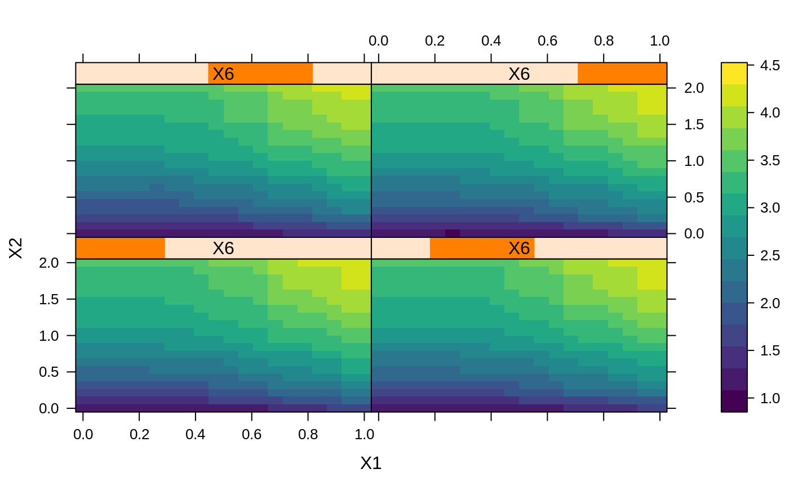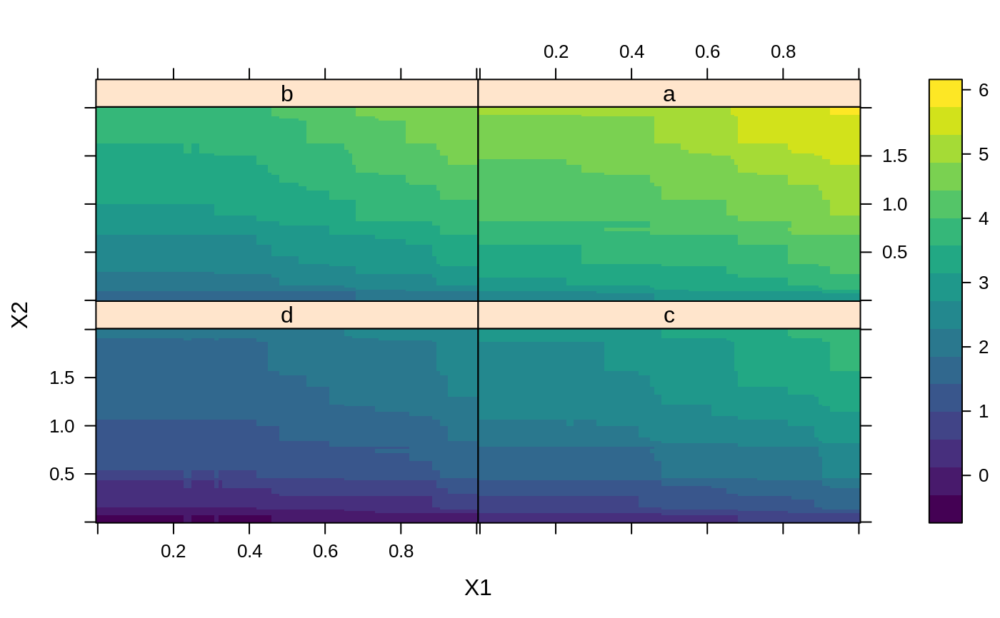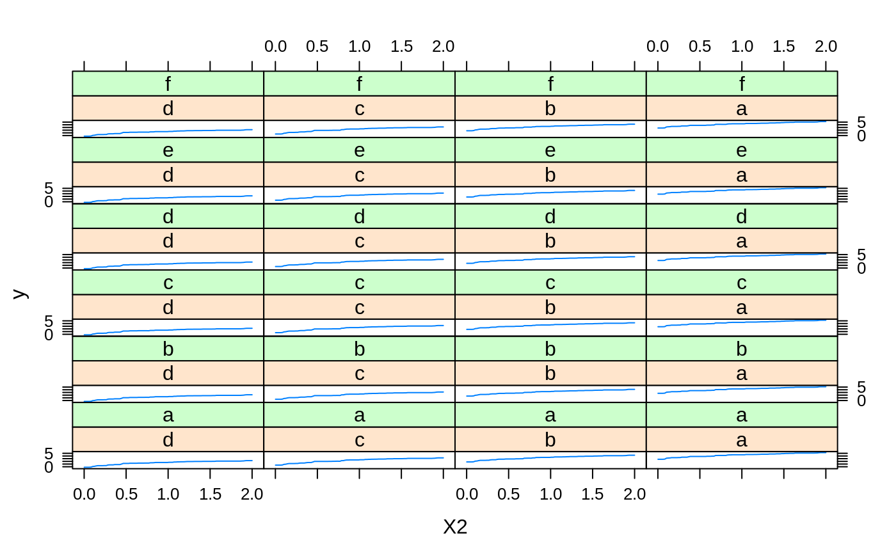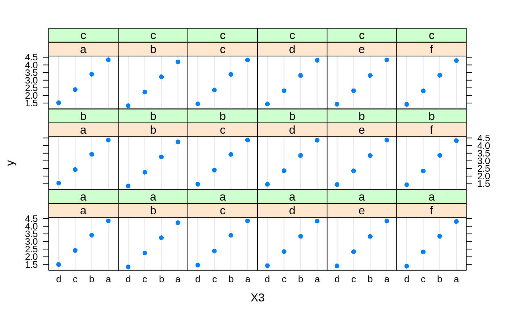# Add more (i.e., 100) boosting iterations to the ensemble gbm2 <- gbm.more(gbm1, n.new.trees = 100, verbose = FALSE)